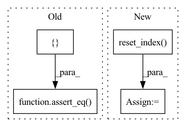

Pattern ID :26088
Before Change
assert "name-string_x_var" not in result.columns
// Check "count"
assert_eq(
result[["name-cat", "name-cat_count"]]
.drop_duplicates()
.sort_values("name-cat")["name-cat_count"],
df0.groupby("name-cat").agg({ "x": "count"} )["x"].astype(np.int64),
check_index=False,
check_dtype=False, // May get int64 vs int32
check_names=False,
)
// Check "min"
assert_eq(
result[["name-string", "name-string_x_min"]]After Change
// Check results. Need to sort for direct comparison
expect = df0.sort_values(["label", "x", "y", "id"]).reset_index(drop=True).reset_index()
got = result.sort_values(["label", "x", "y", "id"]).reset_index(drop=True) .reset_index()
gb_e = expect.groupby("name-cat").aggregate({"name-cat": "count", "x": ["sum", "min", "std"]})
gb_e.columns = ["count", "sum", "min", "std"]
df_check = got.merge(gb_e, left_on="name-cat", right_index=True, how="left")In pattern: SUPERPATTERN
Frequency: 3
Non-data size: 4
Instances Fragment ID: 78680688
Project Name: nvidia/nvtabular
Commit Name: 8cb492e153ceb0bb56d95a311e43b9f30f39a7b1
Time: 2021-02-08
Author: rzamora217@gmail.com
File Name: tests/unit/test_dask_nvt.py
M Class Name: AnonimousClass
N Class Name: AnonimousClass
M Method Name: test_dask_groupby_stats(4)
N Method Name: test_dask_groupby_stats(4)
M Parent Class:
N Parent Class:
M File Name: tests/unit/test_dask_nvt.py
N File Name: tests/unit/test_dask_nvt.py
M Start Line: 135
M End Line: 185
N Start Line: 130
N End Line: 160
Before Change
op = nvt.ops.FillMissing(42)
cont_names = ["x", "y"]
columns_ctx = {}
columns_ctx["continuous"] = {}
columns_ctx["continuous"]["base"] = cont_names
for col in cont_names:
idx = np.random.choice(df.shape[0] - 1, int(df.shape[0] * 0.2))
df[col].iloc[idx] = None
transformed = cudf.concat([op.apply_op(df, columns_ctx, "continuous")])
assert_eq( transformed[cont_names], df[cont_names].fillna(42))
@pytest.mark.parametrize("engine", ["parquet"])
def test_dropna(tmpdir, df, dataset, engine):After Change
idx = np.random.choice(df.shape[0] - 1, int(df.shape[0] * 0.2))
df[col].iloc[idx] = None
df = df.reset_index()
dataset = nvt.Dataset(df)
processor = nvt.Workflow(cont_features)
processor.fit(dataset)
new_gdf = processor.transform(dataset).to_ddf().compute()
for col in cont_names:
assert np.all((df[col].fillna(42) - new_gdf[col]).abs().values <= 1e-2)
assert new_gdf[col].isna().sum() == 0 Fragment ID: 78680690
Project Name: nvidia/nvtabular
Commit Name: 4c92dffac4354d816178264bcfcdec722db2ec1c
Time: 2021-01-05
Author: github@benfrederickson.com
File Name: tests/unit/test_ops.py
M Class Name: AnonimousClass
N Class Name: AnonimousClass
M Method Name: test_fill_missing(4)
N Method Name: test_fill_missing(4)
M Parent Class:
N Parent Class:
M File Name: tests/unit/test_ops.py
N File Name: tests/unit/test_ops.py
M Start Line: 385
M End Line: 396
N Start Line: 207
N End Line: 223
Before Change
// Check category counts
cat_expect = df0.groupby("name-string").agg({"name-string": "count"}).reset_index(drop=True)
cat_result = (
result.groupby("name-string").agg({ "name-string": "count"} ).reset_index(drop=True)
)
if freq_threshold:
cat_expect = cat_expect[cat_expect["name-string"] >= freq_threshold]
// Note that we may need to skip the 0th element in result (null mapping)
assert_eq(
cat_expect,
cat_result.iloc[1:] if len(cat_result) > len(cat_expect) else cat_result,
check_index=False,
)
else:
assert_eq( cat_expect, cat_result)
// Read back from disk
df_disk = dask_cudf.read_parquet(output_path, index=False).compute()
for col in df_disk:After Change
// Check categories. Need to sort first to make sure we are comparing
// "apples to apples"
expect = df0.sort_values(["label", "x", "y", "id"]).reset_index(drop=True).reset_index()
got = result.sort_values(["label", "x", "y", "id"]).reset_index(drop=True).reset_index()
dfm = expect.merge(got, on="index", how="inner")[["name-string_x", "name-string_y"]]
dfm_gb = dfm.groupby(["name-string_x", "name-string_y"]).agg(
{"name-string_x": "count", "name-string_y": "count"}
) Fragment ID: 78680755
Project Name: nvidia/nvtabular
Commit Name: 8cb492e153ceb0bb56d95a311e43b9f30f39a7b1
Time: 2021-02-08
Author: rzamora217@gmail.com
File Name: tests/unit/test_dask_nvt.py
M Class Name: AnonimousClass
N Class Name: AnonimousClass
M Method Name: test_dask_workflow_api_dlrm(9)
N Method Name: test_dask_workflow_api_dlrm(9)
M Parent Class:
N Parent Class:
M File Name: tests/unit/test_dask_nvt.py
N File Name: tests/unit/test_dask_nvt.py
M Start Line: 65
M End Line: 127
N Start Line: 55
N End Line: 122